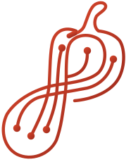
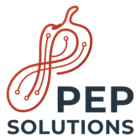
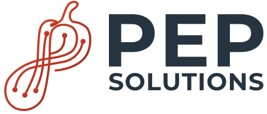
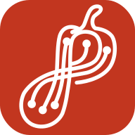

Manuale del marchio · v1 · 2026
PEP Solutions,
a pan e puparuol.
Come si usano logo, colori, caratteri e tono di voce. Regole semplici, come tutto il resto.

01L'idea
PEP sta per Pan E Puparuol, “pane e peperoni”: il pasto semplice e sostanzioso della tradizione napoletana. Parlà a pan e puparuol vuol dire spiegare le cose in modo diretto, senza giri di parole.
Il simbolo racconta la stessa cosa: una sola linea continua disegna insieme la P e il peperone. Le piste con i nodi sono il circuito, cioè la tecnologia, che sta dentro la forma senza appesantirla. Semplici fuori, solidi dentro.
Per tutti
Un nome tech pulito e internazionale: pep in inglese vuol dire energia, prontezza.
Per chi ascolta la storia
Pan E Puparuol: niente fumo, solo sostanza. È il modo più veloce per rompere il ghiaccio con un cliente.
02Il logo
Tre versioni dello stesso logo. Verticale è la versione principale (copertine, insegne, presentazioni). Orizzontale va negli spazi bassi e larghi (intestazione del sito, firma email, carta intestata). Il simbolo da solo si usa quando il nome è già scritto accanto o lo spazio è quadrato (avatar social, icone).

Verticale (principale)

Orizzontale
Simbolo
Versioni colore
A colori su fondi chiari. Su fondi scuri o su foto usa la versione bianca. La versione antracite è per la stampa a un colore (timbri, fax, incisioni).
Colore su crema o bianco

Bianco su antracite
Bianco su rosso peperone
Spazio di rispetto e dimensioni minime
Attorno al logo lascia sempre uno spazio libero pari almeno all'altezza della scritta “SOLUTIONS”: niente testo, bordi o immagini lì dentro.
| Versione | Schermo | Stampa |
|---|---|---|
| Verticale | larghezza ≥ 120 px | ≥ 25 mm |
| Orizzontale | larghezza ≥ 140 px | ≥ 30 mm |
| Simbolo | altezza ≥ 48 px | ≥ 12 mm |
| Icona (favicon, app) | da 16 px in su | — |
Sotto i 48 px le piste sottili si impastano: usa l'icona, cioè il simbolo bianco con tratto più spesso su quadrato rosso.

Cosa non fare
Non deformarlo: si scala solo in proporzione.
Non cambiare i colori.
Niente ombre, rilievi o effetti.
Non mettere il logo a colori su fondi rossi o con poco contrasto.
Non ruotarlo.
Non riscrivere il nome con un altro carattere.
03I colori
Il rosso peperone è il colore che ci fa riconoscere: usalo per il logo, i pulsanti e i dettagli importanti, non per grandi superfici. La base sono il crema e il bianco; l'antracite è per i testi.
Rosso peperone
HEX #C2361F
RGB 194 54 31
CMYK 0 85 90 15 (indicativo)
Peperone scuro
HEX #9E2A1C
RGB 158 42 28
Ombre della sfumatura, hover
Peperone chiaro
HEX #D9472C
RGB 217 71 44
Luci della sfumatura
Antracite
HEX #26343F
RGB 38 52 63
Testi, logotipo, fondi scuri
Ardesia
HEX #5B6673
RGB 91 102 115
Testi secondari
Pane (crema)
HEX #FAF6EF
RGB 250 246 239
Fondo principale
Crosta
HEX #EAD9BC
RGB 234 217 188
Accenti caldi, bordi
Bianco
HEX #FFFFFF
Schede, riquadri
Proporzioni indicative: tanto crema e bianco, un po' di antracite, poco rosso.
Contrasti verificati (WCAG AA): bianco su rosso 5,5:1 · rosso su crema 5,1:1 · antracite su crema 11,9:1.
04I caratteri
Due caratteri, entrambi gratuiti e liberi (licenza OFL). Sul sito sono ospitati da noi, senza servizi esterni.
Titoli e logotipo
Bold 700 ed ExtraBold 800. Geometrico, solido, si legge da lontano. È lo stesso carattere della scritta del logo.
Testi
Regular 400 per i testi, SemiBold 600 per le evidenze. Pensato per lo schermo, chiarissimo anche piccolo.
In Word o PowerPoint, se non hai questi caratteri, usa Arial (testi) e Arial Black (titoli).
05Tono di voce
Parliamo come parleremmo a un cliente seduto al tavolo: chiari, diretti, umani. Diamo del tu. Frasi corte. Una cosa alla volta.
“Il tuo sito si apriva lento perché il server era piccolo. L'abbiamo spostato: ora si apre in un secondo.”
“Ti serve un backup automatico ogni notte. Costa X al mese. Il resto, per ora, non ti serve.”
“Abbiamo implementato una migrazione cloud-native scalabile con ottimizzazione delle performance end-to-end.”
“La nostra suite enterprise sinergica abilita la digital transformation del tuo business.”
Frasi del marchio
- Payoff principale: L'informatica, servita semplice.
- Te lo spieghiamo a pan e puparuol.
- Niente fumo, solo sostanza.
06Scarica
Il kit contiene tutte le versioni del logo in SVG (vettoriale: si ingrandisce senza perdere qualità, va bene per tipografie e insegne) e le icone in PNG.